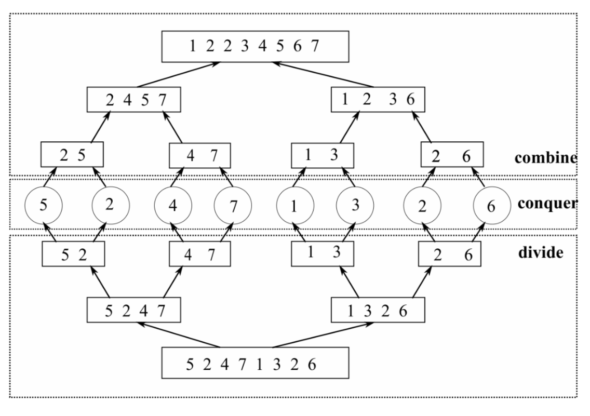
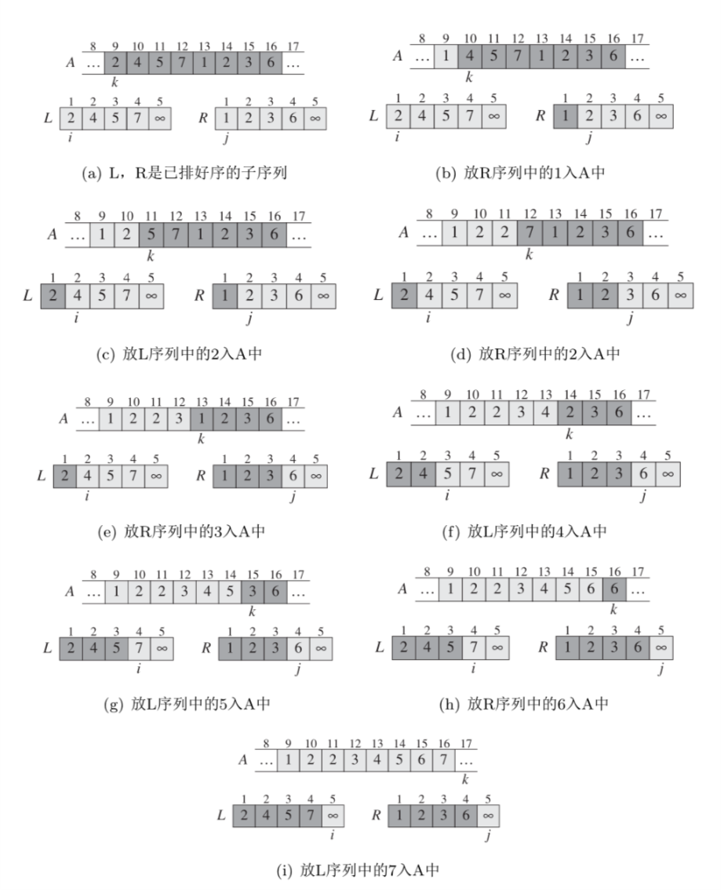

merge排序
1 算法描述
Merge排序算法是一种基于比较的排序算法。不同于插入排序和冒泡排序，Merge排序的时间复杂度\(T(n)=\mathcal{O}(n\log{n})\)。John Von Neumann在1945年发明了该算法。
Merge排序算法是分治（Divide-and-Conquer）算法设计思想的典型代表。分治算法的思想是把原来的大问题递归的分解成相同类型的更小的问题，最后把这些小问题的解决方案组合起来从而解决原来的大问题。具体论及Merge算法，可以做如下描述：
- Divide: 把输入的长度为\(n\)的数组分成两个长度为\(n/2\)的子数组（若\(n\)不是偶数，则分层长度为\(\lceil \frac{n}{2} \rceil\)和\(\lfloor \frac{n}{2} \rfloor\)的两个数组）。
- Conquer：递归的使用Merge排序排列生成的子数组。
- Combine：把排好序的两个子序列合并成一个序列。最终生成想要得到的有序序列。
Merge排序算法是一个递归算法，其递归式为：
\begin{equation} \label{eq:20120704mergesort} T(n) = \left\{ \begin{array}{ll} c & \text{if}\quad n=1 \\ 2T(n/2) + cn & \text{if} \quad n>1 \end{array} \right. \end{equation}通过主方法(Master Method)可以解上边的递归式。\(T(n)=\Theta(n\log{n})\)。关于主方法在后文会给出论述，详见CLRS的教科书。
下面通过一个例子简单的展示Merge排序的工作原理。
2 示例
假设\(A=\{ 5,2,4,7,1,3,2,6\}\)，则整个Merge排序过程如图1所示。

图 1: merge排序示例
从图中可以看出，真个算法分为三部分，从下向上看为：divide，conquer，combine。divide部分完成排序问题的划分，数组\(A=\{ 5,2,4,7,1,3,2,6\}\)首先划分为\(A_1=\{ 5,2,4,7\}\)和\(A_2=\{1,3,2,6\}\)两个子数组，然后子数组\(A_1=\{ 5,2,4,7\}\)再划分为\(A_{11}=\{ 5,2\}\)和\(A_{12}=\{4,7\}\)两个子数组，子数组\(A_2=\{1,3,2,6\}\)再划分为为\(A_{21}=\{1,3\}\)和\(A_{22}=\{2,6\}\)两个子数组。至此，问题划分完毕，然后conquer的过程是很简单的过程：为只有两个元素的数组排序！！！combine的过程也就是merge的过程。这个过程也相当的简单，不再赘述。
接下来给出最后一次merge的过程，即图1中从上往下看前两行的过程。此过程如图2所示。

图 2: \(A=\{ 5,2,4,7,1,3,2,6\}\) merge过程
从图上可以看出merge排序不是一种稳定的排序算法，它会改变等值元素的位置，比如在本例中的两个2，最终排序结果中的2的顺序有可能不同于原始序列中的2的顺序。
3 伪代码
4 算法分析
在分析Merge排序过程中，为简化分析过程，我们假定\(n\)为偶数。这一假定并不影响最终的分析结果。
同样我们使用Divide-and-Conquer的步骤来分析Merge排序算法。
- Divide： 问题划分过程需要计算序列索引的中位数。这个花费的时间是常量。因此\(D(n)=\Theta(1)\)
- Conquer: 在这一过程中，迭代的解决两个规模为\(n/2\)的子问题，花费时间为\(2T(n/2)\)。
- Combine： Merge的过程花费的时间与输入数组的规模线性相关，即\(C(n)=\Theta(n)\)。
所以Merge排序的递归式可以写为：
\begin{equation} \label{eq:20120704merge2} T(n) = \left \{ \begin{array}{ll} \Theta(1) & \text{if} \quad n=1 \\ 2T(n/2) + \Theta(n) & \text{if} \quad n>1 \end{array} \right. \end{equation}通过主方法可以解式(\ref{eq:20120704merge2})，\(T(n)=\Theta(n\log{n})\).
5 Merge排序C语言实现
首先给出Divide 和 Conquer的C语言实现。
1: void merge_sort(int *a , int p ,int r) 2: { 3: int q =0; 4: if(p<r) 5: { 6: q = floor( (p + r)/2 ) ; 7: merge_sort(a, p , q); 8: merge_sort(a,q+1,r); 9: merge(a,p,q,r); 10: } 11: }
注：用到了C的库函数floor。
接下来给出Merge的C语言实现。
1: void merge(int * a , int low ,int middle ,int high ) 2: { 3: int i=0,k=0,j=0; 4: /// create two arrays and initialize them using array a 5: int n1 = middle - low + 1;int n2 = high - middle ; 6: int L[ n1 ];int R[ n2 ]; 7: for (i=0;i<n1;i++) 8: L[ i ] = a[ low + i ]; 9: for (j=0;j<n2;j++) 10: R[ j ] = a[ middle + j+ 1 ]; 11: /// merge process 12: i=0;j=0; 13: for (k=low;k<high;k++) 14: { 15: if((L[ i ]<= R[ j ]) && i < n1 ) 16: { 17: a[ k ]=L[ i ]; 18: i++; 19: } 20: else if ( ( L[i] > R[ j ] ) && j < n2 ) 21: { 22: a[ k ] = R[ j ]; 23: j++; 24: } 25: if (i==n1) break; 26: else if (j==n2) break; 27: } 28: while(i<n1)/// more numbers in L 29: { 30: k++; 31: a[ k ] = L[ i ]; 32: i++; 33: } 34: while(j<n2)/// more numbers in R 35: { 36: k++; 37: a[ k ] = R[ j ]; 38: j++; 39: } 40: }